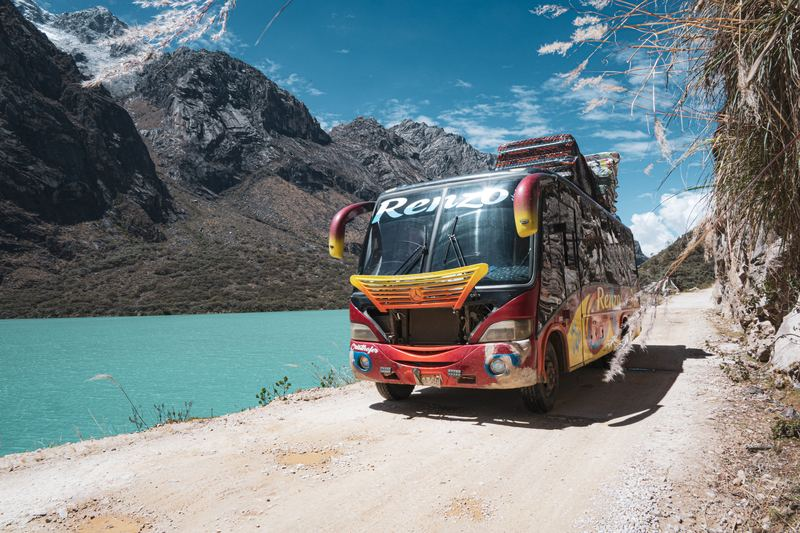
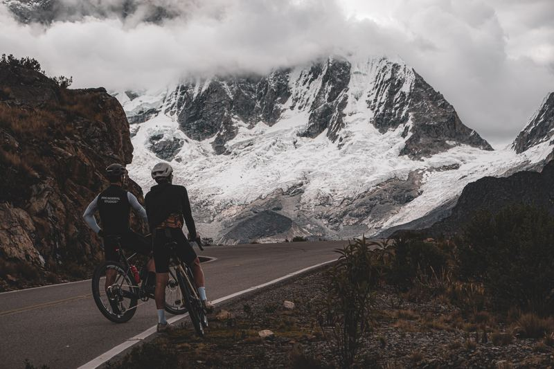
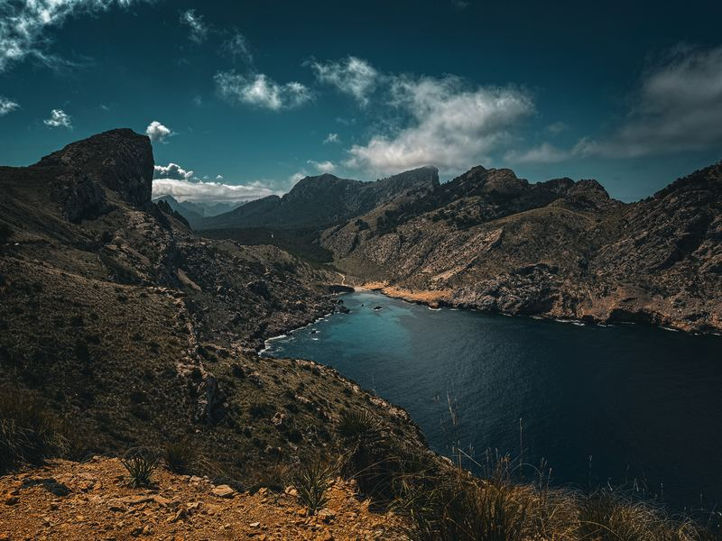
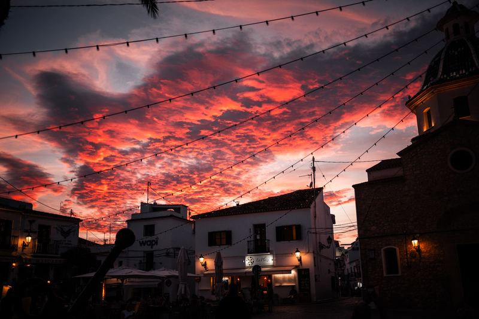
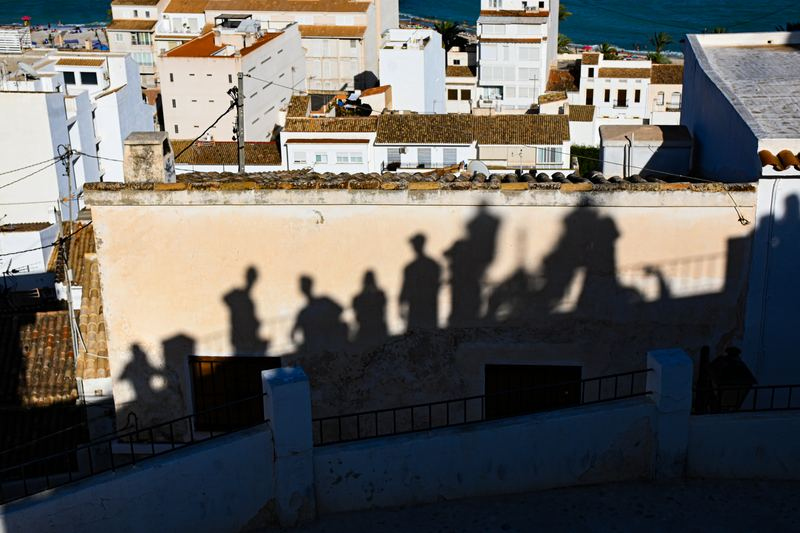

Sprzęt
Aparaty i obiektywy, którymi zrobiłem zdjęcia z portfolio. Liczby pokazują, ile zdjęć na stronie powstało danym sprzętem.

Nikon Z f
Bezlusterkowiec pełnoklatkowy
- Nikkor Z 24-200mm f/4-6.3 VR30
- Nikkor Z 40mm f/24
- Zdjęć w portfolio34
Peru, Galápagos, Ekwador, Sycylia, Japonia, Gdańsk

Sony RX100 VI
Kompakt, matryca 1"
- Zeiss 24–200 mm f/2.8–4.519
- Zdjęć w portfolio19
Peru, Galápagos, Ekwador, Altea, Festiwal Zorza, Krynica Morska, Gdańsk

iPhone 15 Pro
Telefon
- Zdjęć w portfolio6
Majorka, Bogota, Rzym, Gdańsk

Fujifilm X100VI
Kompakt APS-C ze stałym obiektywem
- Fujinon 23 mm f/23
- Zdjęć w portfolio3
Altea

Nikon Z fc
Bezlusterkowiec APS-C Już nie używam
- Nikkor Z DX 16-50mm f/3.5-6.3 VR31
- Nikkor Z DX 18-140mm f/3.5-6.3 VR29
- Viltrox AF 33/1.4 Z15
- Zdjęć w portfolio75
Altea, Amsterdam, Majorka, Larnaka, Quito, Nowy Jork, Boston, Ateny, Bogota, Rzym, Gdańsk
Obróbka: Adobe Lightroom.